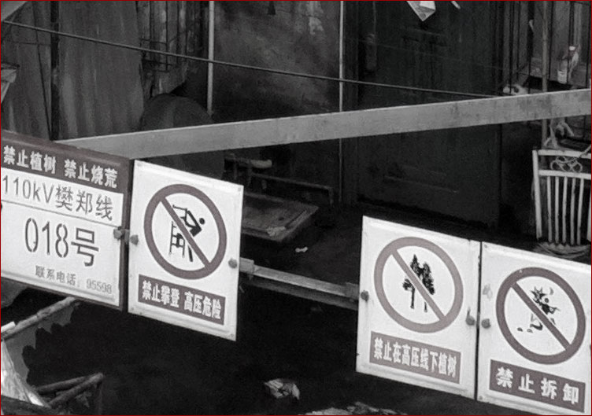
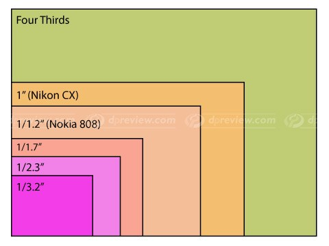
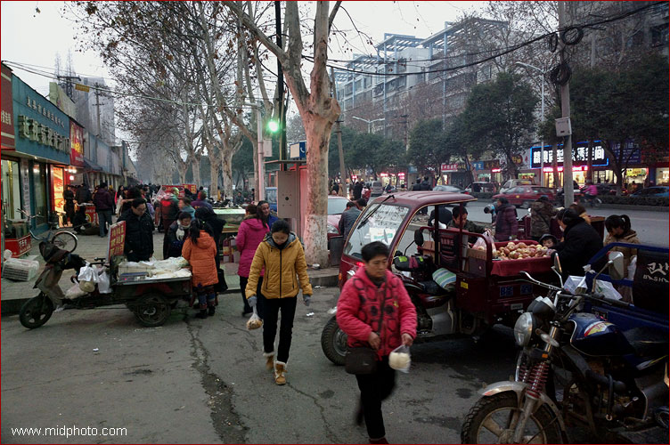
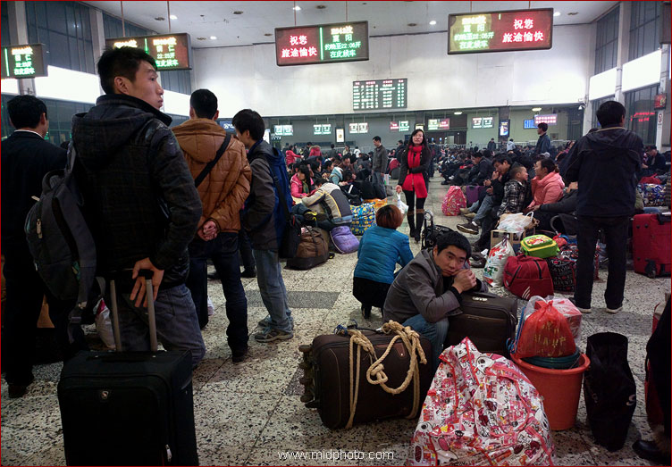
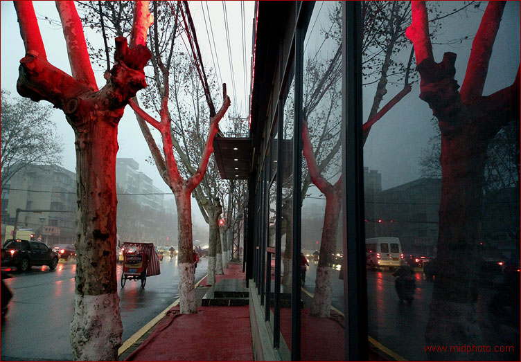
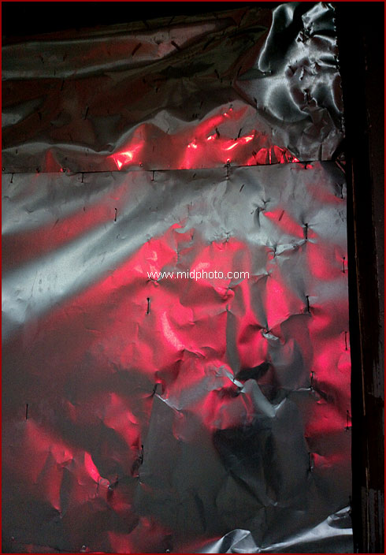
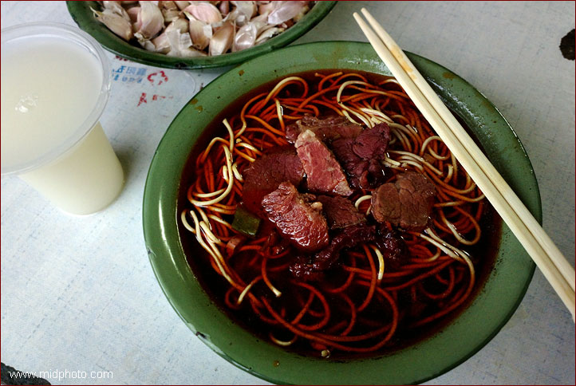
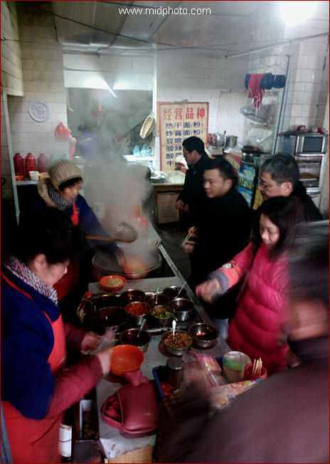
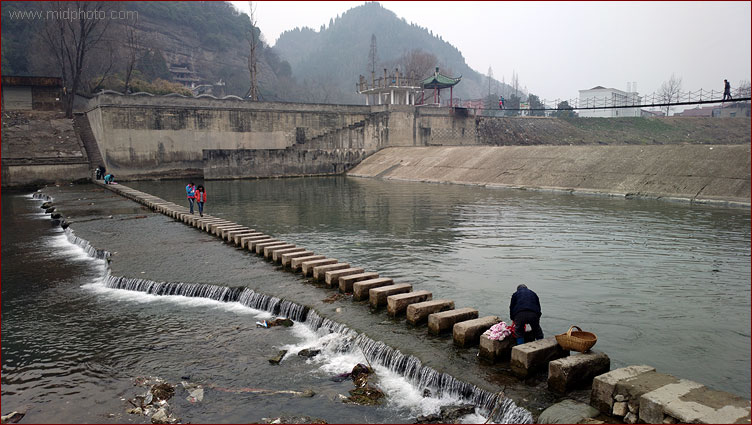

南漳的桥，兼个人点评诺基亚808手机
总结808的优缺点：
优点：
1，超高解像度，4100万像素秒杀所有手机和单电，以及绝大部分单反；
2，超快速启动照相机（with 实体拍照键和锁屏键）；
3，最慢快门达2.7秒，可拍较亮的城市夜景；
4，全高清1080P录像效果非常好；
5，录音质量非常好，超过普通录音笔；
6，放音质量非常好（用耳机），完全可以取代400元以下的MP3
7，可用64G卡扩展（实测Sandisk
64g TF可用），容量无忧
8，USB口有OTG模式，可读U盘和读卡器；
9，可换电池，长时间拍摄不在话下；
10，自带ND减光镜（Neutral Density Filter ）；
11，同时拥有有氙气闪光灯、LED补光灯和对焦辅助灯（可关闭）；
12，有实体接电话和挂电话键，冬天戴手套不愁；
13，网络信号非常好，通话质量高；
14，有挂绳。
缺点：
1，只是个傻瓜相机，不能调光圈快门；
2，没有RAW存储格式，JPEG存储不够精细；
3，最慢快门只有2.7秒，弱光拍摄还是不行；
4，高感光度（ISO800/1600）还是渣，夜景不行；
5，高光容易过曝（成一片死白）；
6，屏幕看文字比较渣；
7，塞班系统被抛弃，应用软件少；
8，无损变焦和纯景pureview模式只能算better
than nothing；
9，USB口是长方形，难分方向，插反了容易坏；
10，最近对焦距离16厘米，微距坑爹；
11，没有光学防抖。
-----------------------------
首先强调一下手机拍照的重要性。对纪实，只要拍到了你就是爷，至于图片质量，那只是第二考虑。手里没机子你怎么拍？逛街带相机的人不多，但任何时候绝少有人出门不带手机。你应该明白手机拍照的重要性了吧？
相机越大用得越少，手机是地球人用得最多的相机。
手机拍照第二个巨大好处是隐蔽性。摄影史一百多年留下的经典作品大多是人物照，即便不是大头照，至少上面也有人。也就是说，你必须到大街上把镜头对准别人。问题是，大部分人都不喜欢在街上突然被一个陌生人的镜头指着。不知你喜欢不，我反正是不喜欢。一般人也不觉得大庭广众之下的日常琐事有啥值得纪念，plus，对陌生人的戒备乃是人
和动物的天性之一。孔夫子说，己所不欲，勿施于人。人家不要，你还厚着脸皮强拍，抢劫乎？
抢劫
肯定不好，那偷如何？好吧，如果一定要选，我觉得偷比较好。我理想中的终极偷拍利器是眼球内置一个存储芯片，它可以记录看到的任何东西，但这目前来看遥遥无期；第二终极武器是一个类似谷歌眼镜的东西，针孔摄像头装在眼镜框上，你的眼睛可以实时取景，手上遥控开机。这个装备可能快了。
这两类终极偷拍利器迟迟不来，当下最好的偷拍工具就是手机，人手一个，在任何地方，只要你装作接电话的样子按下快门，绝少有人会注意你（需关闭声音和对焦辅助灯）。我一直在寻找最佳拍照手机，从2007年的诺基亚N82，到2010年的华晶Altek806（一个手机奇葩，有35-105mm三倍光学变焦
；天语和三星也出过几款光学变焦手机），到2011年LG的LU6200，最后我终于搞来了诺基亚808。我有意回避了苹果手机，我不喜欢封闭的系统，不让客户越狱，从电脑上传首歌都要通过iTunes专用软件
，苹果的价格也过于暴利。除非别无选择，否则我绝不支持苹果。
下面点评808的优缺点。
1，超高解像度，4100万像素秒杀所有手机和单电相机，以及绝大部分单反
2012年春天诺基亚宣布808手机的时候，整个摄影圈眼镜掉了一地，4100万像素？？？很多人怀疑自己是否眼花了。截止2013年2月，诺基亚808依然傲视数码单反和单电（在解像度方面），主流的单反都还是1200万到2400万像素，最高解像度的尼康D800也不过3600万像素（售价两万元人民币不含镜头）。
也许你要说手机需要这么多像素干啥，这个世界疯了吗？800万像素足以精细打印A4大小的图片，普通家庭照800万像素都嫌多。但作为一半靠照片吃饭的人，任何相机，我从来只用最高解像度拍（RAW格式, if possible），以防万一哪张照片有广告公司、图片公司或出版社找我要大图。拿不出大图，我的饭碗就丢了一半。我需要两千万像素以上，因为
摄影展出一般使用EPSON7910或9910巨型打印机，有的巨幅照片边长超过一米，我怎么会嫌像素多呢？下面这张图片可以帮你理解4100万像素照片的解像度：

塔下人家，襄阳

这张是局部100%截图（去色之外无处理）。看出来在原图的什么地方吗？所以，808
最大强项就是4100万像素超高解像度。当你在电脑上一步一步zoom
in，看着无比的细节一步一步显示出来，它们甚至超过了你肉眼所见以及你记忆所及，那惊喜非言语可以形容。
2，超快速启动照相机（with 实体拍照键和锁屏键）
街头纪实非常强调快速抓拍。“决定性瞬间”，一秒定成败。808有一个专门的实体锁屏键。我通常这么干：拍完后相机不退出，大拇指扒拉一下锁屏键，直接揣口袋里。拿出来只要再扒拉一下锁屏键，立刻就可拍照，几乎没有延迟，干脆利落。打开相机配合锁屏键是启动808拍照的最快方法。
808的第二个强项是有（两键程的）实体拍照键，冬天戴着手套非常便于拍照。另外，我的拍摄习惯是先半按快门对焦，然后重新构图再按下快门，没有实体拍照键我会很抓瞎。这个实体键还有一个巨大的好处：任何状态下只要长按拍照键一秒钟，808就进入拍照模式。我经常是一边从裤子口袋里掏出808，大拇指一边就按着快门键启动相机，手机举到眼前就已经可以按快门了。
3，最慢快门达2.7秒，可拍较亮的城市夜景；绝大多数手机拍夜景都是渣。但诺基亚808快门速度可以到2.7秒，这是绝大多数手机做不到的。但2.7秒还是不够长，拍汽车灯光轨迹或者非常暗的夜景有时需要十秒到一分钟的曝光时间，808也只能抓瞎。我觉得诺基亚在后期固件更新可以设置一个B门。没有
全手动曝光或者B门，拍夜景实在受限制。请看下图：

阳光一百小区，原片无调整。快门速度2.7秒，ISO200，三脚架。
也许你要问为啥上脚架了还不用ISO100，夜景应该使用最低感光度来保证图片质量不是？问题就在于808的最长曝光时间只有2.7秒，我只得提高ISO到200。要是有B门该多好！
4，全高清1080P录像效果非常好；非常好，有多好？当然不能和松下GH2等视频强机来比，但在手机里808的全高清视频差不多让我满意了，拍摄格式为1080p30，最高码率25Mpbs。拍摄过程中可以4倍无损变焦。
5，录音质量非常好，超过普通录音笔；但我还没有机会来对比它和Zoom H1以及索尼D50的录音，请关注本站以后的更新。
6，放音质量非常好（耳机），完全可以取代400元以下的MP3。它的音质完全可以当做一个中上水平的MP3/4来用（本人是二十年的音响发烧友）。当然，原机自带的耳机是个渣，你必须买一个较好的耳塞。我用的是森海塞尔MX760以及PX200.
7，可用64G卡扩展（实测Sandisk
64g TF可用），容量无忧。也不知道从什么时候开始，高端手机开始流行不能用扩展卡，而是分为8G、16G、32G和64G不同版本。比如iphone5，它的16G版卖4500元，64G的卖6500元，也就是说48G的存储要卖两千元，实在太坑爹了。我买的Sandisk
64g TF只花了340元。我打心里眼想抵制不能用存储卡的手机。欺负客户人傻钱多？
8，USB口有OTG模式，可读U盘和读卡器；
对一般人来说，这个功能用得不多。但对于摄影师，这个功能很重要。特别是对喜欢徒步或骑单车长途拍照的人，行李每多一克重量都是负担。任何时候都必须双备份，这是摄影师的原则之一。有了OTG就可以备份每天拍的照片（而不用带笨重的笔记本电脑），直接备份到U盘或者另外一张存储卡上。
9，可换电池，长时间拍摄不在话下；
对专业摄影师来说，没有备用的电池和存储卡，一般就不要出门拍照了，省得让人笑话。也不知道从什么时候起，高端手机开始不能自换电池，这对我等手机摄影师来说，心都碎了一地。对于设计这种手机的人，我只有两个字奉送：脑残。
10，自带ND减光镜（Neutral Density Filter ）；
ND镜在强光的海滩拍照，以及长时间曝光的场景比如瀑布水流，是必不可少的。对于视频的拍摄，ND镜也是必备，因为最佳快门速度是frame
rate的两倍，1080p30拍摄的最佳快门速度是1/60秒；在大白天，视频拍摄急需ND滤镜。
11，同时拥有氙气闪光灯、LED补光灯和对焦辅助灯（可关闭）。市场上的手机有这三种灯的屈指可数。可以这么说，808是作为一款相机来设计的。
12，有实体接电话和挂电话键，冬天戴手套不愁；我差点忘了诺基亚808还是一个智能手机，可以接打电话。。。可以导航。。。而且，在大冬天不用脱手套就可接电话，实在方便。
13，网络信号非常好，通话质量高；有一次在地下车库，都是移动卡，摩托罗拉defy以及酷派5870都没信号，诺基亚808突然响了：先生，您的快递。。。。黄了我的车震计划，气得我吐血。
14，有挂绳。。。你见过没有挂绳和背带的相机吗？挂绳很重要，你掏枪再快，也不及枪一直在手上快。808可以挂在手上，或者挂在胸前，虽然形象有点二。
下面说说缺点：
1，只是个傻瓜相机，不能调光圈快门；
808没有光圈可调，它只有一档光圈F2.4。这一点它还不如老前辈诺基亚N86（有三档光圈可调）。快门速度也不可手动设置。不过，在我记忆中，还没有哪一台手机有全手动M挡。三星Galaxy Camera可能例外，但那奇葩不算是手机，只能发短信不能打电话。手动曝光这么难实现吗？
2，没有RAW存储格式，JPEG存储不够精细；
只要是摄影师，没有不喜欢RAW的，它相当于数码底片。我觉得通过固件升级手机RAW存储是可以实现的。但带来的问题是文件巨大。用808自带的相机软件拍照，JPEG存储选最精细，3800万像素一张图片大约在10MB左右。如果使用第三方拍照软件CameraPro，JPEG存储选择100%最精细，则一张4100万像素图片
大小为30-40MB，手机完全黑屏3 - 4秒钟才能存储完。。。。如果能拍RAW，我估计一张图片可能接近100MB，有点恐怖。但上脚架慢工出细活的时候，有RAW是最好了，我不在意那点存储时间。
3，最慢快门只有2.7秒，弱光拍摄还是不行。参见上面的阳光一百小区夜景。我就不明白了，已经可以曝光近3秒，再加几秒难道会死人？怎么就不加上长时间曝光这个选项呢？
4，无损变焦和纯景pureview模式
如果不说是骗人的，最多也只能算better than
nothing。我们都知道，绝大部分手机都是定焦镜头，无法光学变焦，所谓的的数码变焦digital
zoom是彻头彻尾的骗人，以牺牲图片质量为代价，专业人士对数码变焦从来不齿。诺基亚808装备的是一个28mm定焦镜头，如果它能无损光学变焦，我立马跳楼，绝不食言。
808号称的3倍无损变焦是如何实现的？原来808在3800万全像素下是不可变焦的，它所谓的无损变焦其实就是在3800万全像素图片中间挖一部分，
所以输出像素越小变焦的倍数就越大（800万像素下是2倍无损变焦，500万像素下3倍，300万像素下是3.6倍）。对我来说，这不是真正的无损变焦，因为它损失了解像度（像素）。所以我
的808都固定在4100万或者3800万全像素拍照，从来不用所谓的无损变焦。后期要裁剪一下在电脑里是举手之劳。

感光芯片尺寸比较图, photo
courtesy www.dpreview.com
808用的是一块大型感光芯片，1/1.2"
的CMOS, 大过绝大多数小数码DC，比一般的手机1/3.2"的感光芯片大4倍以上,
参见上图（最外圈青色的是松下和奥林巴斯单电的感光芯片大小）。808巨大的4100万像素感光芯片
有一个好处，如果你（不变焦）输出800万像素或者500万像素的照片，808就自动用几个像素联合起来输出一个像素点（over-sampling，过取样），减低弱光下的噪点，提高图片质量。诺基亚把over-sampling取了个新名字叫pureview.
但在我看来，这pureview其实意义不大，如果你很在意解像度的话。
诺基亚采用Pureview变焦到底有何意义？
为何不采用光学变焦？我比较了一下，三倍光学变焦的Altek806只比诺基亚808厚了一毫米左右。我觉得终极手机街头偷拍利器有两种方案，一是把SONY的RX100加装安卓通讯模块，
如果要保持超薄，那另外一个方案是把潜望式镜头的三防卡片机加装安卓通讯模块。。。但没有厂商这么做，我不明白这是为什么，这在技术上是完全没有问题的。SONY
and SAMSUNG, are you listening?
5，高感光度（ISO800/1600）还是渣，夜景不行。
808感光芯片虽大，但因为有超高的4100万像素，所以单个像素面积还是非常小，只有1.4um，与一般手机无异。
不难理解808成像质量依然是手机拍照水平，（在全像素下）绝不要指望它有类单反或者单电的弱光表现。如果使用over
sampling，弱光下图片质量提高了，但这同样是以牺牲解像度为代价的。这个功能没啥好吹嘘的。下图是3800万全像素（自动ISO1600）拍摄的照片，也许你会说，弱光下还是相当不错嘛：

傍晚的街道，襄阳
这是100%截图，未处理，看出来在上一张图的什么地方吗？可以看到，ISO1600时全像素拍摄，诺基亚808为了减低噪点，图片涂抹得很厉害，已经类似水彩画，这完全是
手机和普通口袋DC水平，哪里有半点单电的影子？更别说全画幅单反了。也许你要说，为啥不采用pureview，拍800万或者500万像素图片？当然可以，但如果你需要大图，把500万像素图片放大到3800万像素，效果可能比这个还差。
6，高光容易过曝（成一片死白）。这是所有手机和口袋小DC的通病，因为单个感光点面积太小了。诺基亚808这个问题也
很严重。所以，要尽量避开明暗对比过大的场景。数码相机拍照的原则之一是宁欠勿过，图片暗一点没关系，后期可以调回来，如果高光过曝成一片死白，那就无可挽回了。
7，屏幕只有640X360解像度，看图片还行，但如果你习惯了视网膜屏，808的屏幕看文字确实有点坑爹。
8，塞班Symbian操作系统已经在2013年1月正式被彻底抛弃，808是全世界最后一款塞班手机，空前and绝后了。
虽然已被抛弃，但主要的软件还是有的，网上有很多资源。以后的新软件会不会有塞班版本，这就不好说了。
9，USB口是长方形，难分方向，插反了容易坏。坑爹啊，诺基亚，你用个普通的梯形口不行吗？这一点要表扬苹果，新的闪电接口没有上下，随便插。
10，最近对焦距离16厘米，微距坑爹。
。。别说把手表拍满框，就是小点的闹钟都拍不满框。这点实在让我不满意，几百块钱的山寨机微距都强过808几条街。
因为这不是一篇专业评测文章，我不再啰嗦了，网上有很多808的纯技术评测，大家自己搜索。如果你英文够用，这篇是肯定要看的：http://www.dpreview.com/articles/8083837371/review-nokia-808-pureview
南漳的桥
这次去襄阳市南漳县，我口袋里揣着诺基亚808和三星Galaxy Camera两台手机（式相机），小包里还带着索尼NEX7单电。三星Galaxy
Camera也是个奇葩，它采用安卓4.1操作系统，具有23-481mm的超大光学变焦。Nex7也是目前SONY的单电机皇。但三天下来，我基本没有用Galaxy
Camera以及NEX7的欲望。我用诺基亚808不停的在街上偷射。。。这相机真好用啊。。。要不是偶有电话进来，我都忘了808原来还是一台手机。。。还带导航。。what
else can i say?
南漳的桥我去年就策划了。去年过年的时候，yvonne的QQ签名说南漳那个桥十几年了还是老样子，我当时就动了念头。我对各种连名字都没听说过的小地方特别有兴趣。初到南漳县城那天中午我是相当激动的，仿佛又回到了2008年冬天骑行北京到长沙107国道沿线场景。中国内地县城都很相似。很大一部分国人并不是生活在大城市或者纯乡村，如果要记录中国的话，普通而平凡的小县城是不能错过的。
很多摄影师都知道美国麦迪逊县的廊桥，这主要是因为《廊桥遗梦》这个电影。但我却不太明白这个电影的意义。歌颂婚外情吗？一个摄影师和一个农妇之间的露水情缘，既不是英雄救美也不是日久生情。。我看这个电影还是改名廊桥遗精比较妥当。后来我想，可能是歌颂责任感，偷情也不能放弃家庭
。如果是这样，那这部电影要传达的观点就相当主流，没啥可说的。当今社会，不都是外面彩旗飘飘，家里红旗不倒吗？
但我却是对老桥很有兴趣的。桥梁代表连接。我这次从长沙往返湖北省襄阳市南漳县，快去快回只花了三天，相当匆忙，主要是因为父母亲大人都病在家里，我没法久留。但这三天我拍了几百张，集中测试了一下诺基亚808手机。

长沙火车站。我第一次站在这里应该是1976年。

襄阳的清晨
买的是软卧，这不符合我节俭的原则，但除了软卧就只有站票，我年纪大了实在顶不住站一晚上。本以为可以好好睡一晚上，但





这是100%截图，未处理，看出来在上一张图的什么地方吗？





201